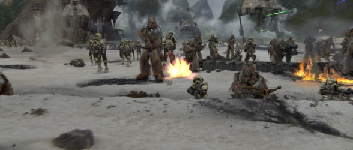
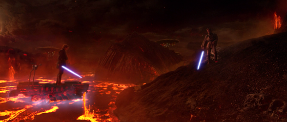
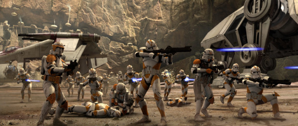

Star Wars Episode III: Revenge of the Sith – Original Motion Picture Soundtrack is the film score to the 2005 film of the same name released by Sony Classical on May 3,
2005, more than two weeks before the film's release.
The music was composed and conducted by John Williams, and performed by the London Symphony Orchestra and London Voices.
The score was Williams' sixth score in the saga. Shawn Murphy recorded the score.
Ramiro Belgardt and Kenneth Wannberg served as music editors; Wannberg served as music editor for the previous Star Wars scores.
A remastered version of the soundtrack was released by Walt Disney Records on May 4, 2018.
A music video titled A Hero Falls was created for the film's theme, "Battle of the Heroes", featuring footage from the film.
In the U.K.,
"Battle of the Heroes" was released as a CD-single and reached No. 25 in the UK Singles Chart in June 2005.
The soundtrack also came with a collectors' DVD, Star Wars: A Musical Journey, that features 16 music videos set to remastered selections of music from all six film scores,
set chronologically through the saga.
This album was chosen as one of Amazon.com's Top 100 Editor's Picks of 2005.
During the process of shaping the film for its theatrical release,
Lucas and his editors dropped many scenes, and even an entire subplot.
Lucas excised all the scenes of a group of Senators, including Padmé, Bail Organa, and Mon Mothma (Genevieve O'Reilly), organising an alliance to prevent the Chancellor from receiving any more emergency powers.
Though this is essentially the Rebel Alliance's birth, the scenes were discarded to achieve more focus on Anakin's story.
The scene where Yoda arrives on Dagobah to begin his self-imposed exile was also cut, but is featured in a deleted scene in the DVD release, although McCallum stated he hopes Lucas may add it to the release if Lucas releases a six-episode DVD box set.
Many scenes concerning Jedi deaths during the execution of Order 66 were cut. The deaths of Barriss Offee and Luminara Unduli were either cut from the film or not filmed in the first place.
Bai Ling filmed minor scenes for the film playing a senator, but her role was cut during editing.
She claimed this was because she posed for the June 2005 issue of Playboy, whose appearance on newsstands coincided with the film's May release. Lucas denied this, stating that the cut had been made more than a year earlier,
and that he had cut his own daughter's scenes as well.
After the screenplay's earliest draft was submitted, the art department began designing the various ways that each element could appear on screen.
For the Kashyyyk environment, the art department turned to The Star Wars Holiday Special for inspiration.
Over a period of months, Lucas would approve hundreds of designs that would eventually appear in the film.
He would later rewrite entire scenes and action sequences to correspond to certain designs he had chosen.
The designs were then shipped to the pre-visualization department to create moving CGI versions known as animatics.
Ben Burtt would edit these scenes with Lucas in order to previsualize what the film would look like before the scenes were filmed.
The pre-visualization footage featured a basic raw CGI environment with equally unprocessed character models performing a scene, typically for action sequences.
Steven Spielberg was brought in as a "guest director" to make suggestions to the art designers for the Mustafar duel, and oversee the pre-visualization of an unused version of the Utapau chase scene.
Later, the pre-visualization and art department designs were sent to the production department to begin "bringing the film out of the concept phase" by building sets, props and costumes.
To determine the required sets, Lucas analyzed each scene with the staff to see which moments the actors would come in most contact with the set, warranting it to be constructed.
| Kashyyyk | Mustafar | Utapau |
|---|---|---|
|  |  |  |

 Home
Home
 Characters
Characters
 Curiosities
Curiosities